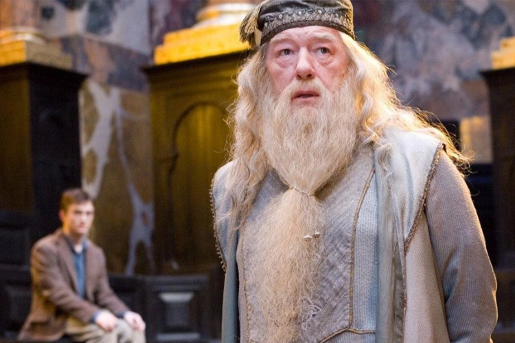

-
Em qual animal Olho-Tonto Moody transfigurou Malfoy?
-
Em qual animal Olho-Tonto Moody transfigurou Malfoy?
88% de acerto:você é praticamente um aluno de Hogwarts!

Parabéns Potterhead! Bem-vinx a Hogwarts, aproveite o loop infinito de comida e clique no botão abaixo para usar o vira-tempo e reiniciar este teste.